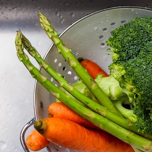
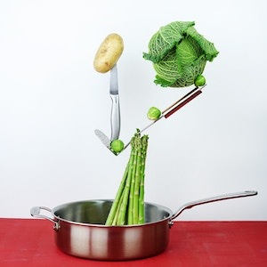

Ingredients
| Ingredient | Amount |
|---|---|
| asparagus | 1 bunch |
| boiling water | 3 quarts |
| butter | 3 tablespoons |
| salt | 1 tablespoon |
| pepper | 1/3 teaspoon |
Instructions
- Vegetables should be thoroughly washed and cooked till tender in freshly boiling, salted water (1/2 tablespoon salt to 1 quart water) 
- Remove white part of stalk and tie in bunches.
- Cook about 20 minutes. 
- When asparagus is soft, drain well and place on slices of buttered toast which have been previously dipped in the water in which the asparagus was cooked.
- Season with salt and pepper.